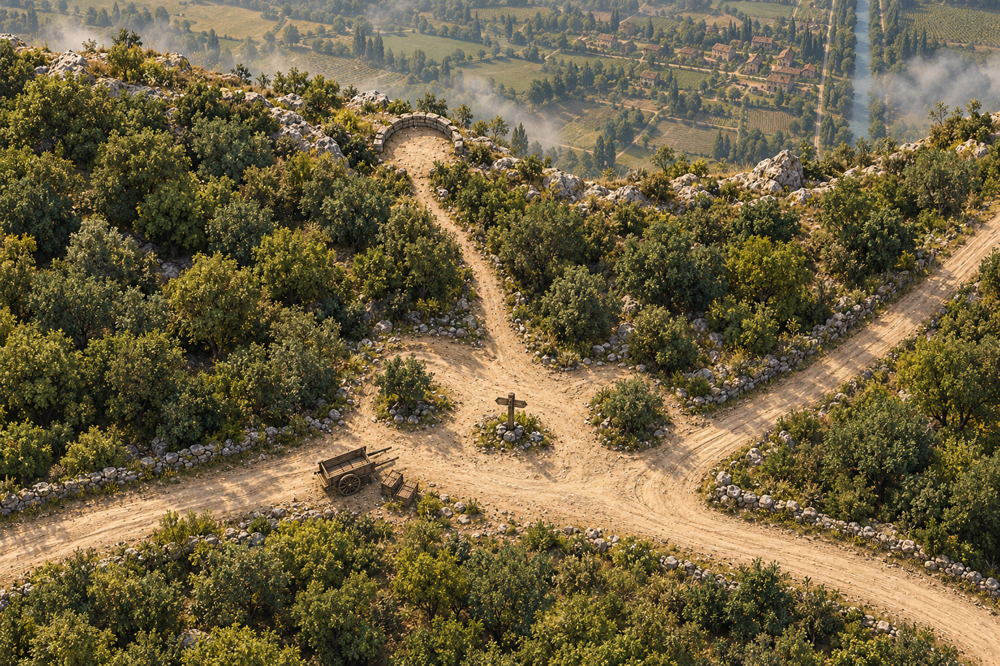
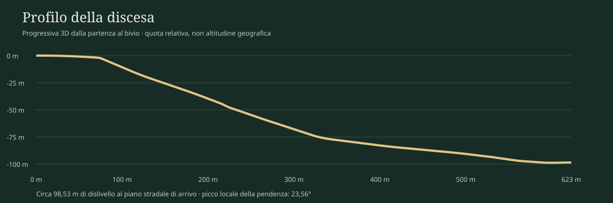
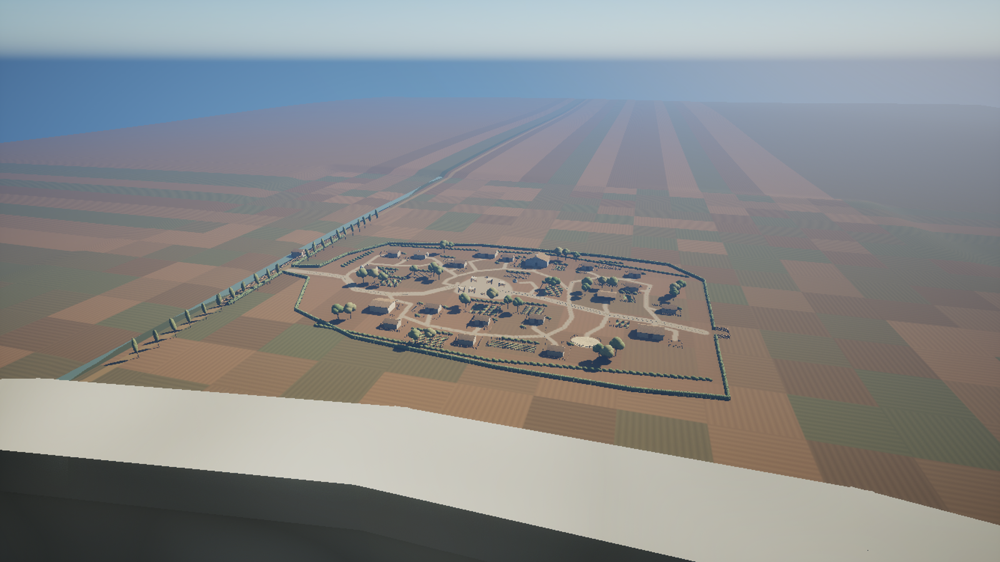
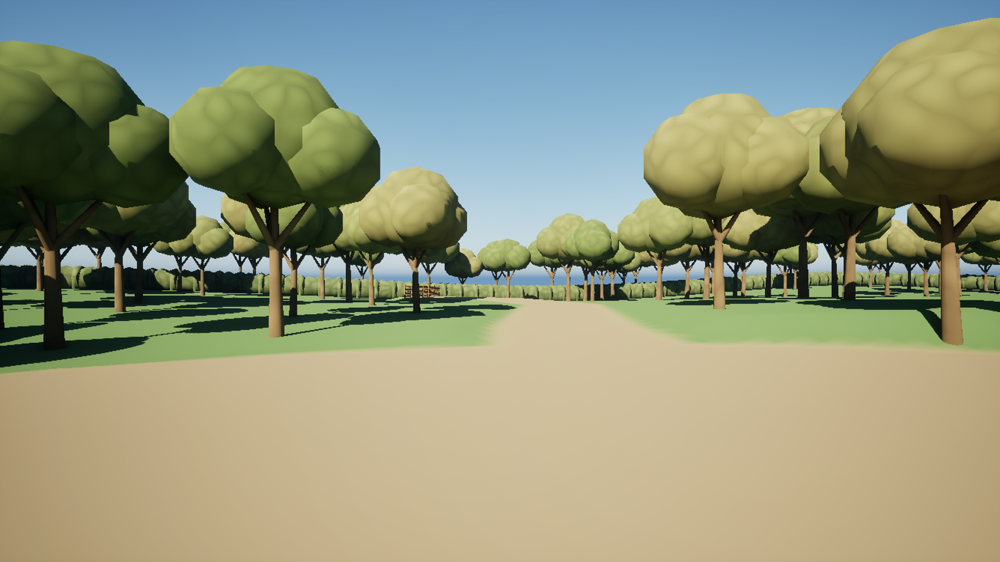
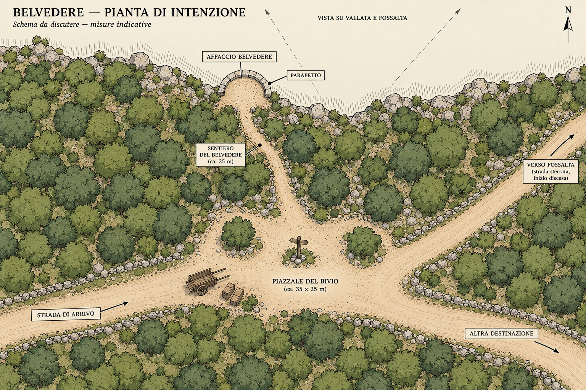
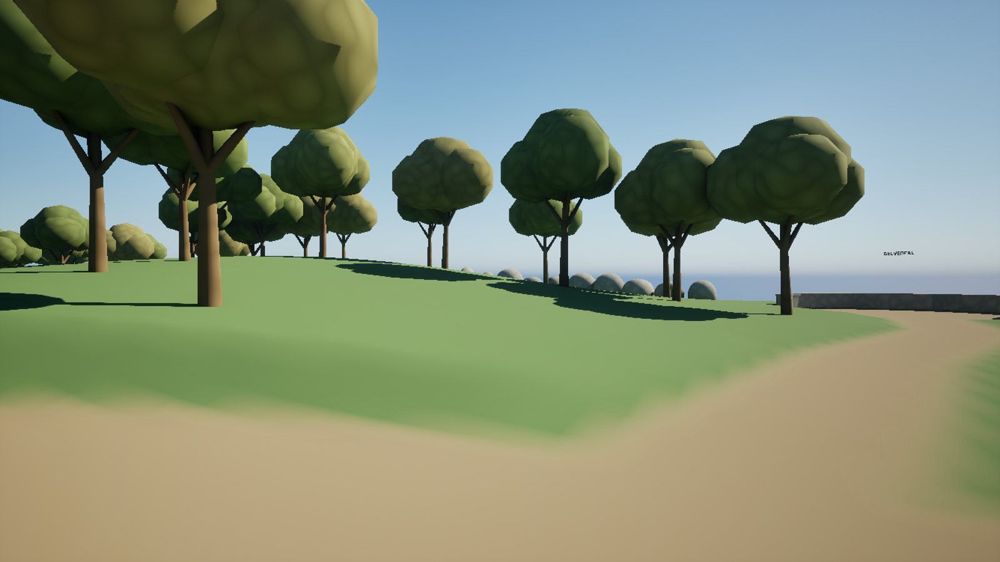

Un bivio, un affaccio, una discesa.
Il punto iniziale del giocatore è presso il bivio: una strada di arrivo attraversa un piccolo spiazzo alberato. Un breve sentiero raggiunge l’affaccio; una strada separata scende fino a Fossalta. Un ulteriore ramo si allontana nella direzione opposta al Belvedere.
Costruire un luogo rurale coerente con le immagini allegate: terra battuta, murature semplici, legno, rocce e vegetazione. Il modello approvato definisce gli ingombri e la percorribilità; le reference definiscono il carattere delle superfici e delle masse.
Mappa di riferimento
/Game/Developers/Roberto/Greybox_WTFD/Maps/L_Belvedere_Bivio_L01
Progetto: Sviluppo/Unreal Project/Roberto_Greybox_Sandbox/WhereTheFogDies/WhereTheFogDies.uproject. Questa mappa contiene Belvedere, discesa e villaggio raccordato. Per gli edifici, i mestieri, le corti e il mercato consultare il manuale di Fossalta.
Per collocazioni e collisioni esatte aprire il modello salvato; per la produzione degli asset usare anche pianta, profilo e catalogo di questa consegna.

Pianta della configurazione finale.
Quote in metri rispetto al bivio (Z = 0). Nella pianta LD, +X va a est e +Y a nord. In Unreal 1 m = 100 cm; usare le coordinate native senza ribaltare l’asse Y. I volumi di Fossalta nella pianta generale sono un riferimento agli ingombri edificati; recinzioni e corti si leggono nel modello e nel manuale della zona A.
I codici BEL-01…BEL-12 identificano le categorie del catalogo. Seleziona un codice nella pianta per leggere i dettagli accanto alla mappa. Il collegamento nella scheda apre la voce completa nel catalogo. Per elementi diffusi (vegetazione, rocce, muretti) il richiamo indica un’area rappresentativa, non un singolo attore.
Clicca un punto per aprire i dettagli. Da tastiera: Tab, poi Invio o Spazio; Esc per chiudere.
Clicca un punto per aprire i dettagli. Da tastiera: Tab, poi Invio o Spazio; Esc per chiudere.
Quote e larghezze da conservare
Spiazzo 35 × 25 m, inviluppo nominale. Strade alte e ramo opposto 5 m. Sentiero del Belvedere 2,50 m. Terrazza 10 × 8 m, centro X −8 / Y 40 m, alla quota del bivio.
Le misure degli inviluppi non trasformano gli spazi in rettangoli regolari: mantenere la forma organica del suolo e l’andamento del modello.
Raccordo al villaggio
Il piano stradale arriva a X −41,624 / Y 238,700 / Z −98,531 m. Il varco occidentale del villaggio è largo 6 m; la strada mantiene i suoi 4 m.
Traslazione del riferimento locale di Fossalta nella mappa: +57,376 / +254,700 / −98,961 m. Il piano dell’ingresso è circa 0,43 m sopra il datum locale del villaggio: usare il raccordo costruito.
Discesa e protezione dei margini.
Il percorso è lungo 622,72 m sulla polilinea 3D, pari a circa 610,73 m in proiezione orizzontale. Dall’altura scende con curve ampie e tratti trasversali, poi si raccorda al piano davanti a Fossalta. Il picco locale della pendenza del tracciato è 23,56°: non è una pendenza uniforme lungo l’intero percorso.

Sezione da rispettare
Carreggiata nominale 4 m. Facce interne dei muretti a ±2,25 m dall’asse: luce complessiva 4,50 m, con circa 25 cm di margine per lato rispetto alla carreggiata.
Muretti alti 85 cm sul piano stradale e spessi 35 cm. La base è interrata per circa 30 cm; i giunti devono seguire la pendenza senza fessure o punte nella collisione.
Inizio e termine dei muretti
Entrambi i lati iniziano alla progressiva 40 m, prima del tratto pericoloso, e terminano a circa 594,72 m. Gli ultimi 28 m verso l’ingresso restano aperti sul piano.
Conservare un piano calpestabile continuo anche nei cambi di pendenza. Radici, sassi, giunti e vegetazione possono dettagliare il bordo senza invadere il passaggio.
Riferimenti metrici del tracciato
| Progressiva 3D | X (m) | Y (m) | Z (m) |
|---|---|---|---|
| 0,00 m | 0,00 | 0,00 | 0,00 |
| 40,00 m | 34,17 | 19,91 | -0,51 |
| 70,00 m | 55,00 | 41,33 | -1,80 |
| 240,00 m | 163,72 | 123,56 | -51,97 |
| 480,00 m | -66,86 | 162,54 | -89,01 |
| 594,72 m | -69,30 | 234,62 | -98,79 |
| 622,72 m | -41,62 | 238,70 | -98,53 |
Le progressive identificano posizioni lungo la strada; non sono coordinate planimetriche. I punti qui mostrati sono interpolati dalla polilinea di costruzione. L’andamento esatto va conservato dal modello.
Asset, ingombri e vincoli.
Le dimensioni nella colonna centrale appartengono al blocking approvato. Le proposte di kit indicano come organizzare la modellazione, senza introdurre nuovi ingombri obbligatori.
| Elemento | Misure e quantità funzionale | Vincolo di costruzione | Indicazione per il kit |
|---|---|---|---|
| BEL-01 Suolo del bivio | 35 × 25 m, inviluppo nominale 1 spiazzo | Mantenere le diramazioni e gli approcci sgombri. Terra battuta irregolare raccordata alle strade. | Superficie continua o terreno con materiali stratificati; dettagli entro le quote esistenti. |
| BEL-02 Strade alte e ramo opposto | 5 m di larghezza nominale Arrivo, prosecuzione e ramo opposto | Conservare il ramo rivolto dalla parte opposta all’affaccio e la sua curvatura. Le estremità sono margini di questa consegna. | Suolo rurale con bordi raccordati; evitare cordoli moderni. |
| BEL-03 Sentiero dell’affaccio | 2,50 m di larghezza nominale 1 collegamento breve | Ingresso da sud; tenere libero l’arrivo alla terrazza e la lettura del bivio. | Terra e pietre affioranti, senza gradini aggiunti. |
| BEL-04 Terrazza panoramica | 10 × 8 m, inviluppo nominale 1 affaccio | Centro LD X −8 / Y 40 m, quota circa 0. Il villaggio deve restare leggibile sopra il parapetto. | Suolo compatto raccordato alla scarpata, margini organici. |
| BEL-05 Parapetto dell’affaccio | Corpo 0,20 m; copertina 0,24 m; sommità circa 0,94 m sul piano locale Arco esterno nord; ingresso sud aperto | Arco nominale con semiassi 5,30 × 4,30 m. Non rialzare il coronamento davanti alla vista. | Muratura rurale e copertine; elementi adattabili alla curva senza varchi di collisione. |
| BEL-06 Segnavia ligneo | Palo 0,18 × 0,18 × 3 m; tavole 1,65 × 0,12 × 0,24 m 1 palo, 3 tavole | Posizione LD X 2 / Y 1 m. Conservare gli orientamenti del modello. Testi e toponimi solo da indicazioni narrative definitive. | Legno e attacchi semplici. Le etichette flottanti del greybox non fanno parte dell’asset finale. |
| BEL-07 Strada di discesa | 622,72 m lungo il tracciato 3D; carreggiata 4 m 1 percorso continuo fino a Fossalta | Conservare curve, quote e innesto; nessuna interruzione o soglia nel piano calpestabile. | Terreno/mesh raccordati; dettagli superficiali con collisione di cammino regolare. |
| BEL-08 Muretti della discesa | Altezza 0,85 m; spessore 0,35 m; luce tra facce interne 4,50 m 2 lati, da progressiva 40 a circa 594,72 m | Continuità ai giunti e nelle curve. Base tecnica interrata 0,30 m; ultimi 28 m verso il piano lasciati aperti. | Moduli diritti e adattabili alla curva/pendenza; lunghezze 1–2 m suggerite per il kit, non vincolo di layout. |
| BEL-09 Scarpata e rocce | Seguire gli ingombri del modello; dislivello complessivo circa 99 m Masse di raccordo e rocce ai margini | Nessun picco o masso davanti al cono di vista; nessun ingombro nel corridoio pedonale. | Rocce grandi/medie e transizioni al terreno coerenti con la reference allegata. |
| BEL-10 Alberi, siepi e sottobosco | Seguire distribuzione e volumi approvati Masse alte del bivio e quinte lungo la strada | Conservare le aperture visive, la leggibilità delle diramazioni e i margini percorribili. | Tronchi, chiome e arbusti variati; diversificare i proxy senza aggiungere ostacoli. |
| BEL-11 Campagna di fondale | Rapporti e quote dalla mappa Campi, canale e filari visibili dall’affaccio | Fossalta e il canale restano riconoscibili; evitare pattern a scacchiera e file ripetute visibili nel greybox. | Masse a distanza, materiali e LOD/HLOD adeguati; il fondale esterno al percorso non richiede nuovi spazi giocabili. |
| BEL-12 Raccordo a Fossalta | Varco 6 m; strada 4 m; approccio finale senza muretti per 28 m 1 innesto occidentale | Nessun graticcio o salto di quota attraverso l’ingresso. Edifici e corti restano quelli della consegna Fossalta. | Transizione strada/campi/recinzioni; usare il catalogo Fossalta per gli asset del villaggio. |
La vallata deve restare leggibile.
Affaccio e distanza di Fossalta
Il villaggio deve essere riconoscibile dall’affaccio, sotto l’altura: si devono leggere il nucleo delle case, i percorsi, i campi e il canale. Conservare il suo rapporto visivo con la terrazza e il panorama ampio intorno.
Camera di riferimento del modello: 1,65 m sopra i piedi, FOV 90°. Quinte arboree, sommità del parapetto, rocce e nuovi elementi vanno valutati a questa altezza.
Non alzare il terreno in primo piano o infittire le chiome dentro la finestra visiva per risolvere dettagli del fondale.
Materiali e vegetazione
Seguire la reference per terra asciutta e consumata, pietre irregolari, murature rurali e legno. La vegetazione dà profondità al bivio e accompagna il percorso; deve guidare la vista senza diventare una barriera uniforme.
Sostituire chiome sferiche, rocce ellissoidali e colori piatti con forme e materiali finali. Campi e filari richiedono variazione credibile, evitando il reticolo ripetitivo dei proxy. Nebbia e luce devono preservare la lettura del villaggio.


Pianta illustrativa e riferimento del bivioApri le tavole di supporto


Carro e casse presenti nell’illustrazione descrivono l’atmosfera dell’arrivo. Questa consegna copre gli elementi del modello approvato; eventuali veicoli, personaggi e oggetti narrativi richiedono un incarico asset specifico.
Sostituire i proxy conservando il luogo.
Da mantenere
- Tracciati, quote, larghezze, terrazza, varco del villaggio e posizione del segnavia.
- Continuità del terreno e dei muretti; collisioni coerenti con le superfici attraversabili.
- Visuale dall’affaccio e rapporto di scala con Fossalta.
- Distribuzione delle masse che accompagna il bivio e la discesa.
- Margini del livello definiti da terreno, rocce, siepi e chiusure di riferimento sulle diramazioni esterne. Non trasformare quelle diramazioni in nuove zone giocabili senza revisione LD.
Da sviluppare negli asset finali
- Materiali, usura, dettagli costruttivi, irregolarità e raccordi delle superfici.
- Kit di muratura adattabili alle curve, con pivot e giunti coerenti.
- Vegetazione, rocce e fondale con dettaglio adeguato alla distanza.
- Collisioni di produzione stabili e leggere: il terreno proxy usa collisione complessa e non costituisce una soluzione finale di ottimizzazione.
- LOD/HLOD, materiali e ombre da verificare nel progetto di destinazione; nessun budget di triangoli è fissato da questa consegna.
Da concordare con LD: spostare l’affaccio o il villaggio, rialzare il parapetto, alterare la strada o il suo dislivello, restringere i passaggi, aggiungere nuove aree, scalinate o ostacoli. Conservare le dimensioni in centimetri native del progetto, verificare scala/pivot ed evitare collisioni sporgenti nei giunti.
Gli asset del villaggio condividono mesh e materiali con /Game/Developers/Roberto/Greybox_WTFD/Village_A_Attempt2_R2. Gli elementi di questa zona sono sotto /Game/Developers/Roberto/Greybox_WTFD/Belvedere_Bivio, con la strada in Discesa. Trasferire il livello con le sue dipendenze attraverso gli strumenti di Unreal; il solo file mappa non contiene tutti gli asset.
Allegati della consegna
Il manuale è il punto di lettura principale. CSV e JSON servono per misure, catalogazione e ricostruzione del tracciato; la cartella media contiene tutte le tavole visualizzate. La consegna va conservata dentro la raccolta insieme al manuale di Fossalta, collegato da questa pagina.